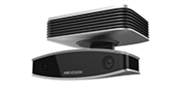
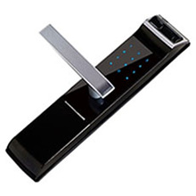
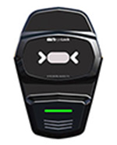
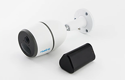

Clique sobre as áreas circulares

Com avançado gerenciamento de eventos, leitura facial, ocorrências e automação de ambientes através de um sistema único, confiável, intuitivo e de fácil configuração e operação.
Sinta-se seguro em todo momento
Com a Fechadura Digital com Senha biométrica será possível ter um alto nível de segurança. A vantagem aqui é a dispensa de chaves, um objeto que notadamente é fácil de se perder.
Oferece captura em tempo real da íris, à distância e em movimento. Ele foi projetado para atender às necessidades de catracas ou de outros ambientes de auto fluxo e inclui um amplo campo de captura para o uso simples e aperfeiçoado em altas velocidades.
Proteção e sustentabilidade
Câmera de segurança móvel regarregável movida a bateria 4G. Incorporando conectividade 4G, HD 1080p, visão noturna de luz estelar, carregamento solar e armazenamento em nuvem.
